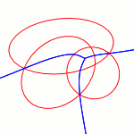
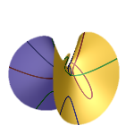

As of 2015 I'm no longer in academia. This page concerns my last position as a postdoc at the Université de Bourgogne.
Contact Info
last postal address
George Tzoumas
Université de Bourgogne
UFR Sciences et Techniques
Bât. Sciences de l'Ingénieur
Faculté Mirande
21000 Dijon, FRANCE
postal address no longer valid
|
|
e-mail address
geotz [at] hotmail [dot] com
old email address [u-bourgogne.fr] no longer valid
or if you know my gmail address, use that one
47.312268, 5.073876
last status
Postdoc researcher at LE2I - Université de Bourgogne
research interests
- Computational Geometry
- Algebraic Geometry
- Exact Computation
|

|

|